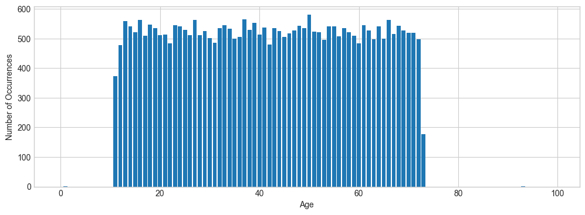
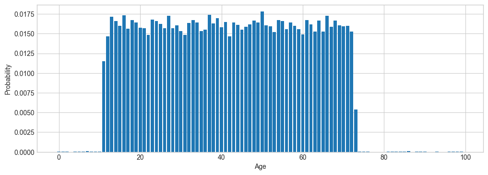
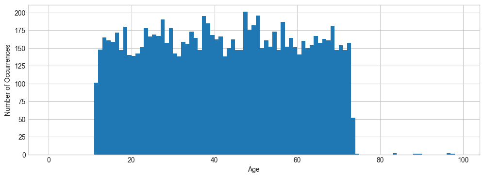
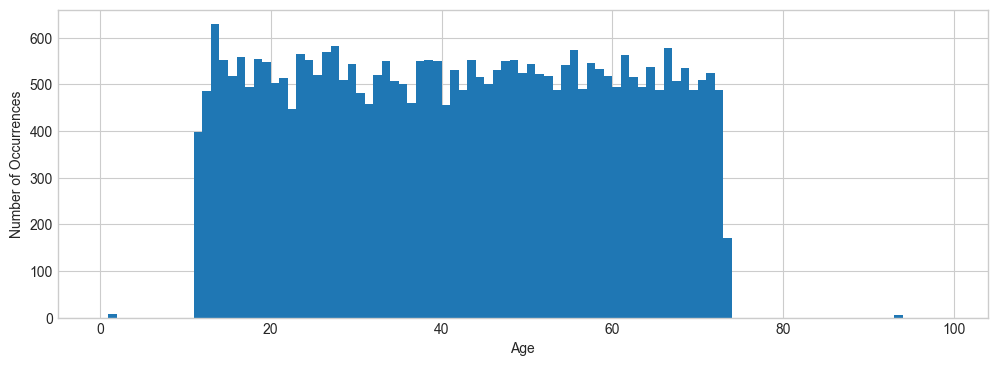

Synthetic Data#
Learning Objectives
After reading this chapter, you will be able to:
Describe the idea of differentially private synthetic data and explain why it is useful
Define simple synthetic representations used in generating synthetic data
Define marginals and implement code to calculate them
Implement simple differentially private algorithms to generate low-dimensional synthetic data
Describe the challenges of generating high-dimensional synthetic data
In this section, we’ll examine the problem of generating synthetic data using differentially private algorithms. Strictly speaking, the input of such an algorithm is an original dataset, and its output is a synthetic dataset with the same shape (i.e. same set of columns and same number of rows); in addition, we would like the values in the synthetic dataset to have the same properties as the corresponding values in the original dataset. For example, if we take our US Census dataset to be the original data, then we’d like our synthetic data to have a similar distribution of ages for the participants as the original data, and to preserve correlations between columns (e.g. a link between age and occupation).
Most algorithms for generating such synthetic data rely on a synthetic representation of the original dataset, which does not have the same shape as the original data, but which does allow answering queries about the original data. For example, if we only care about range queries over ages, then we could generate an age histogram - a count of how many participants in the original data had each possible age - and use the histogram to answer the queries. This histogram is a synthetic representation which is suitable for answering some queries, but it does not have the same shape as the original data, so it’s not synthetic data.
Some algorithms simply use the synthetic representation to answer queries. Others use the synthetic representation to generate synthetic data. We’ll look at one kind of synthetic representation - a histogram - and several methods of generating synthetic data from it.
Synthetic Representation: a Histogram#
We’ve already seen many histograms - they’re a staple of differentially private analyses, since parallel composition can be immediately applied. We’ve also seen the concept of a range query, though we haven’t used that name very much. As a first step towards synthetic data, we’re going to design a synthetic representation for one column of the original dataset which is capable of answering range queries.
A range query counts the number of rows in the dataset which have a value lying in a given range. For example, “how many participants are between the ages of 21 and 33?” is a range query.
def range_query(df, col, a, b):
return len(df[(df[col] >= a) & (df[col] < b)])
range_query(adult, 'Age', 21, 33)
6245
We can define a histogram query which defines a histogram bin for each age between 0 and 100, and count the number of people in each bin using range queries. The result looks very much like the output of calling plt.hist on the data - because we’ve essentially computed the same result manually.
bins = list(range(0, 100))
counts = [range_query(adult, 'Age', b, b+1) for b in bins]
plt.xlabel('Age')
plt.ylabel('Number of Occurrences')
plt.bar(bins, counts);

We can use these histogram results as a synthetic representation for the original data! To answer a range query, we can add up all the counts of the bins which fall into the range.
def range_query_synth(syn_rep, a, b):
total = 0
for i in range(a, b):
total += syn_rep[i]
return total
range_query_synth(counts, 21, 33)
6245
Notice that we get exactly the same result, whether we issue the range query on the original data or our synthetic representation. We haven’t lost any information from the original dataset (at least for the purposes of answering range queries over ages).
Adding Differential Privacy#
We can easily make our synthetic representation differentially private. We can add Laplace noise separately to each count in the histogram; by parallel composition, this satisfies \(\epsilon\)-differential privacy.
epsilon = 1
dp_syn_rep = [laplace_mech(c, 1, epsilon) for c in counts]
We can use the same function as before to answer range queries using our differentially private synthetic representation. By post-processing, these results also satisfy \(\epsilon\)-differential privacy; furthermore, since we’re relying on post-processing, we can answer as many queries as we want without incurring additional privacy cost.
range_query_synth(dp_syn_rep, 21, 33)
6240.0604882216085
How accurate are the results? For small ranges, the results we get from our synthetic representation have very similar accuracy to the results we could get by applying the Laplace mechanism directly to the result of the range query we want to answer. For example:
Synthetic representation error: 0.10311166985440773
Laplace mechanism error: 0.1498426994785831
As the range gets bigger, the count gets larger, so we would expect relative error to decrease. We have seen this over and over again - larger groups means a stronger signal, which leads to lower relative error. With the Laplace mechanism, we see exactly this behavior. With our synthetic representation, however, we’re adding together noisy results from many smaller groups - so as the signal grows, so does the noise! As a result, we see roughly the same magnitude of relative error when using the synthetic representation, regardless of the size of the range - precisely the opposite of the Laplace mechanism!
Synthetic representation error: 0.033480755850390086
Laplace mechanism error: 0.0005452944096732827
This difference demonstrates the drawback of our synthetic representation: it can answer any range query over the range it covers, but it might not offer the same accuracy as the Laplace mechanism. The major advantage of our synthetic representation is the ability to answer infinitely many queries without additional privacy budget; the major disadvantage is the loss in accuracy.
Generating Tabular Data#
The next step is to go from our synthetic representation to synthetic data. To do this, we want to treat our synthetic representation as a probability distribution that estimates the underlying distribution from which the original data was drawn, and sample from it. Because we’re considering just a single column, and ignoring all the others, this is called a marginal distribution (specifically, a 1-way marginal).
Our strategy here will be simple: we have counts for each histogram bin; we’ll normalize these counts so that they sum to 1, and then treat them as probabilities. Once we have these probabilities, we can sample from the distribution it represents by randomly selecting a bin of the histogram, weighted by the probabilities. Our first step is to prepare the counts, by ensuring that none is negative and by normalizing them to sum to 1:
dp_syn_rep_nn = np.clip(dp_syn_rep, 0, None)
syn_normalized = dp_syn_rep_nn / np.sum(dp_syn_rep_nn)
np.sum(syn_normalized)
np.float64(1.0000000000000002)
Notice that if we plot the normalized counts - which we can now treat as probabilities for each corresponding histogram bin, since they sum to 1 - we see a shape that looks very much like the original histogram (which, in turn, looks a lot like the shape of the original data). This is all to be expected - except for their scale, these probabilities are simply the counts.

The final step is to generate new samples based on these probabilities. We can use np.random.choice, which allows passing in a list of probabilities (in the p parameter) associated with the choices given in the first parameter. It implements exactly the weighted random selection that we need for our sampling task. We can generate as many samples as we want without additional privacy cost, since we’ve already made our counts differentially private.
def gen_samples(n):
return np.random.choice(bins, n, p=syn_normalized)
syn_data = pd.DataFrame(gen_samples(5), columns=['Age'])
syn_data
| Age | |
|---|---|
| 0 | 43 |
| 1 | 26 |
| 2 | 68 |
| 3 | 48 |
| 4 | 48 |
The samples we generate this way will be roughly distributed - we hope - according to the same underlying distribution as the original data. That means we can use the generated synthetic data to answer the same queries we could answer using the original data. In particular, if we plot the histogram of ages in a large synthetic dataset, we’ll see the same shape as we did in the original data.

We can also answer some queries we’ve seen in the past, like averages and range queries:
Mean age, synthetic: 41.857
Mean age, true answer: 41.77250253355035
Percent error: 0.2018717692372784
Range query for age, synthetic: 7300
Range query for age, true answer: 23574
Percent error: 69.03368117417494
Our mean query has fairly low error (though still much larger than we would achieve by applying the Laplace mechanism directly). Our range query, however, has very large error! This is simply because we haven’t quite matched the shape of the original data - we only generated 10,000 samples, and the original dataset has more than 30,000 rows. We can perform an additional differentially private query to determine the number of rows in the original data, and then generate a new synthetic dataset with the same number of rows, and this will improve our range query results.
Range query for age, synthetic: 23659
Range query for age, true answer: 23574
Percent error: 0.36056672605412743
Now we see the lower error we expect.
Generating More Columns#
So far we’ve generated synthetic data that matches the number of rows of the original dataset, and is useful for answering queries about the original data, but it has only a single column! How do we generate more columns?
There are two basic approaches. We could repeat the process we followed above for each of \(k\) columns (generating \(k\) 1-way marginals), and arrive at \(k\) separate synthetic datasets, each with a single column. Then, we could smash these datasets together to construct a single dataset with \(k\) columns. This approach is straightforward, but since we consider each column in isolation, we’ll lose correlations between columns that existed in the original data. For example, it might be the case that age and occupation are correlated in the data (e.g. managers are more likely to be old than they are to be young); if we consider each column in isolation, we’ll get the number of 18-year-olds and the number of managers correct, but we may be very wrong about the number of 18-year-old managers.
The other approach is to consider multiple columns together. For example, we can consider both age and occupation at the same time, and count how many 18-year-old managers there are, how many 19-year-old managers there are, and so on. The result of this modified process is a 2-way marginal distribution. We’ll end up considering all possible combinations of age and occupation - which is exactly what we did when we built contingency tables earlier! For example:
ct = pd.crosstab(adult['Age'], adult['Occupation'])
ct.head()
Now we can do exactly what we did before - add noise to these counts, then normalize them and treat them as probabilities! Each count now corresponds to a pair of values - both an age and an occupation - so when we sample from the distribution we have constructed, we’ll get data with both values at once.
dp_ct = ct.applymap(lambda x: max(laplace_mech(x, 1, 1), 0))
dp_vals = dp_ct.stack().reset_index().values.tolist()
probs = [p for _,_,p in dp_vals]
vals = [(a,b) for a,b,_ in dp_vals]
probs_norm = probs / np.sum(probs)
list(zip(vals, probs_norm))[0]
/var/folders/mk/k3661ml57fngl_pfgq6w5_dh0000gn/T/ipykernel_16230/2621474860.py:1: FutureWarning: DataFrame.applymap has been deprecated. Use DataFrame.map instead.
dp_ct = ct.applymap(lambda x: max(laplace_mech(x, 1, 1), 0))
((1, 'Adm-clerical'), np.float64(1.7668655600184527e-05))
Examining the first element of the probabilities, we find that we’ll have a 0.0008% chance of generating a row representing a 17-year-old clerical worker (or something along those lines, the exact row that is returned here is non-deterministic).
Now we’re ready to generate some rows! We’ll first generate a list of indices into the vals list, then generate rows by indexing into vals; we have to do this because np.random.choice won’t accept a list of tuples in the first argument.
indices = range(0, len(vals))
n = laplace_mech(len(adult), 1, 1.0)
gen_indices = np.random.choice(indices, int(n), p=probs_norm)
syn_data = [vals[i] for i in gen_indices]
syn_df = pd.DataFrame(syn_data, columns=['Age', 'Occupation'])
syn_df.head()
| Age | Occupation | |
|---|---|---|
| 0 | 62 | Craft-repair |
| 1 | 34 | Other-service |
| 2 | 11 | Other-service |
| 3 | 35 | Sales |
| 4 | 29 | Machine-op-inspct |
The downside of considering two columns at once is that our accuracy will be lower. As we add more columns to the set we’re considering (i.e., build an \(n\)-way marginal, with increasing values of \(n\)), we see the same effect we did with contingency tables - each count gets smaller, so the signal gets smaller relative to the noise, and our results are not as accurate. We can see this effect by plotting the histogram of ages in our new synthetic dataset; notice that it has approximately the right shape, but it’s less smooth than either the original data or the differentially private counts we used for the age column by itself.

We see the same loss in accuracy when we try specific queries on just the age column:
Percent error using synthetic data: 1.3371537726838587
Note
Higher-Order Correlations in Synthetic Data
When generating synthetic data under differential privacy, preserving higher-order correlations among attributes is both a central goal and a major technical challenge. While it is relatively straightforward to match one-way (marginal) statistics—such as the distribution of individual variables—higher-order statistics, which capture interactions among multiple variables, are more difficult to preserve accurately under strict privacy constraints.
Higher-order correlations refer to statistical dependencies among three or more attributes. For example, in a dataset with attributes like age, income, and education, a third-order correlation might capture that younger individuals with college degrees tend to earn higher incomes. These multi-way interactions are often critical for downstream machine learning models, fairness analyses, or domain-specific insights.
However, ensuring that these complex relationships are faithfully reflected in differentially private synthetic data is difficult because:
Noise accumulation increases with dimensionality. Preserving all pairwise or triple-wise correlations can require querying a large number of statistics, each of which consumes part of the privacy budget.
Sparse data in high-dimensional spaces leads to instability. Many combinations of categorical variables may occur infrequently, making it difficult to estimate their frequencies accurately under privacy constraints.
Modeling choices may bias outcomes. Generative models (e.g., graphical models, variational autoencoders) used to synthesize private data often must approximate or truncate high-order interactions for tractability.
As a result, differentially private synthetic data may faithfully preserve global properties or marginal distributions, while attenuating or distorting subtle multi-attribute relationships. This is an important limitation to understand, particularly in sensitive applications like policy evaluation or fairness auditing, where these interactions often matter most.
Advanced methods like PrivBayes, PATE-GAN, and differentially private graphical models attempt to preserve higher-order structure by modeling joint distributions or sampling correlated statistics more efficiently. But even these methods must carefully trade off between fidelity and privacy.
While synthetic data can preserve some higher-order correlations, it is difficult to preserve all such dependencies without sacrificing privacy or utility. As a result, users of synthetic data must be cautious when relying on subtle, multi-variable patterns in the generated dataset.
Summary
A synthetic representation of a dataset allows answering queries about the original data
One common example of a synthetic representation is a histogram, which can be made differentially private by adding noise to its counts
A histogram representation can be used to generate synthetic data with the same shape as the original data by treating its counts as probabilities: normalize the counts to sum to 1, then sample from the histogram bins using the corresponding normalized counts as probabilities
The normalized histogram is a representation of a 1-way marginal distribution, which captures the information in a single column in isolation
A 1-way marginal does not capture correlations between columns
To generate multiple columns, we can use multiple 1-way marginals, or we can construct a representation of a \(n\)-way marginal where \(n>1\)
Differentially private \(n\)-way marginals become increasingly noisy as \(n\) grows, since a larger \(n\) implies a smaller count for each bin of the resulting histogram
The challenging tradeoff in generating synthetic data is thus:
Using multiple 1-way marginals loses correlation between columns
Using a single \(n\)-way marginal tends to be very inaccurate
In many cases, generating synthetic data which is both accurate and captures the important correlations between columns is likely to be impossible